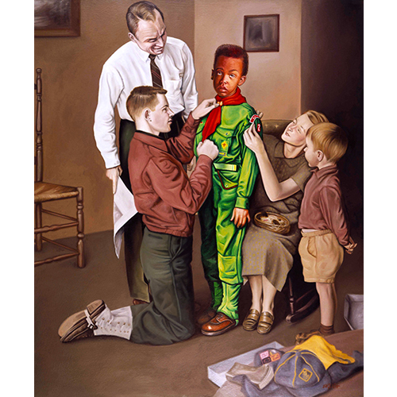

Exhibitions
Rockville Arts Place, Rockville, Maryland, US, February 1–25, 1995.
Revisionist Modernism, The Museum of Contemporary Art, Washington, DC, US, December 2, 1994–January 1, 1995.
Literature
Ron English, Popaganda: The Art & Subversion of Ron English (San Francisco: Last Gasp, 2001), p. 82. ISBN 1-887128-60-3.
Ron English, Fauxlosophy: The Art of Ron English (San Francisco: Last Gasp, 2008), p. 186. ISBN 978-0867196566.
Ron English, Original Grin: The Art of Ron English (Paris: Cernunnos, 2019), p. 145. ISBN 978-2374950938.
Notes
This work references Norman Rockwell’s Mighty Proud. A representative image is available here .